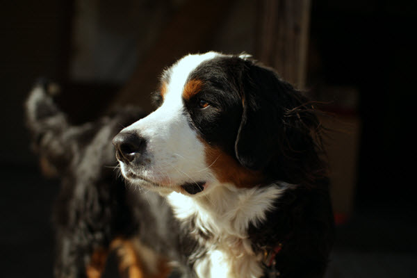

About the Bernese Mountain Dog
The Bernese Mountain Dog is one of the Sennenhund-type dogs bred in the Swiss Alps. The name Sennenhund is a combination of the German words "senne," meaning alpine pasture and "hund," meaning dog. These types of dogs were bred to work with alpine herders and farmers. Bernese (or Berner) refers to the area of origin, in Bern. Berners were also used in drafting, trained to pull carts of large milk containers and other heavy items. The breed was recognized by the American Kennel Club (AKC) in 1937.
The Bernese Mountain Dog is a large-sized dog, with males weighing 80-120 lbs. and females 70-110 lbs. Berners are good-natured and self-assured and enjoy outdoor activities.